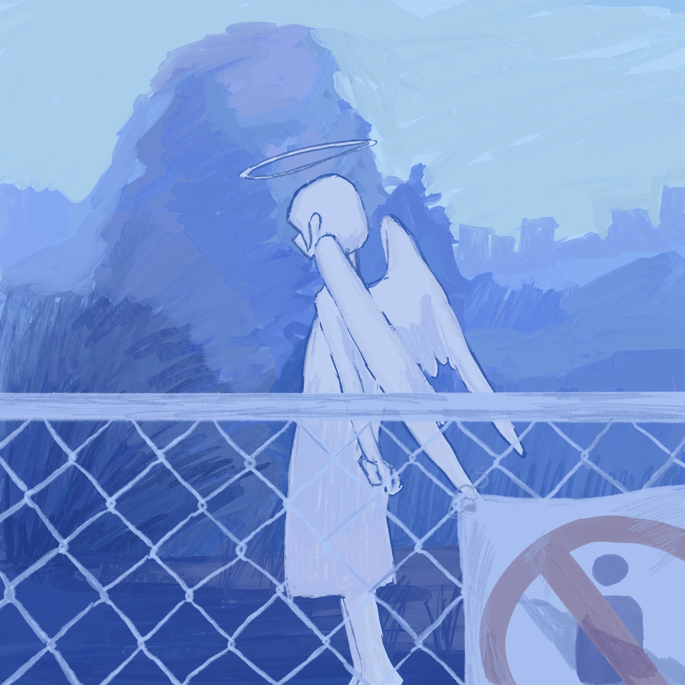
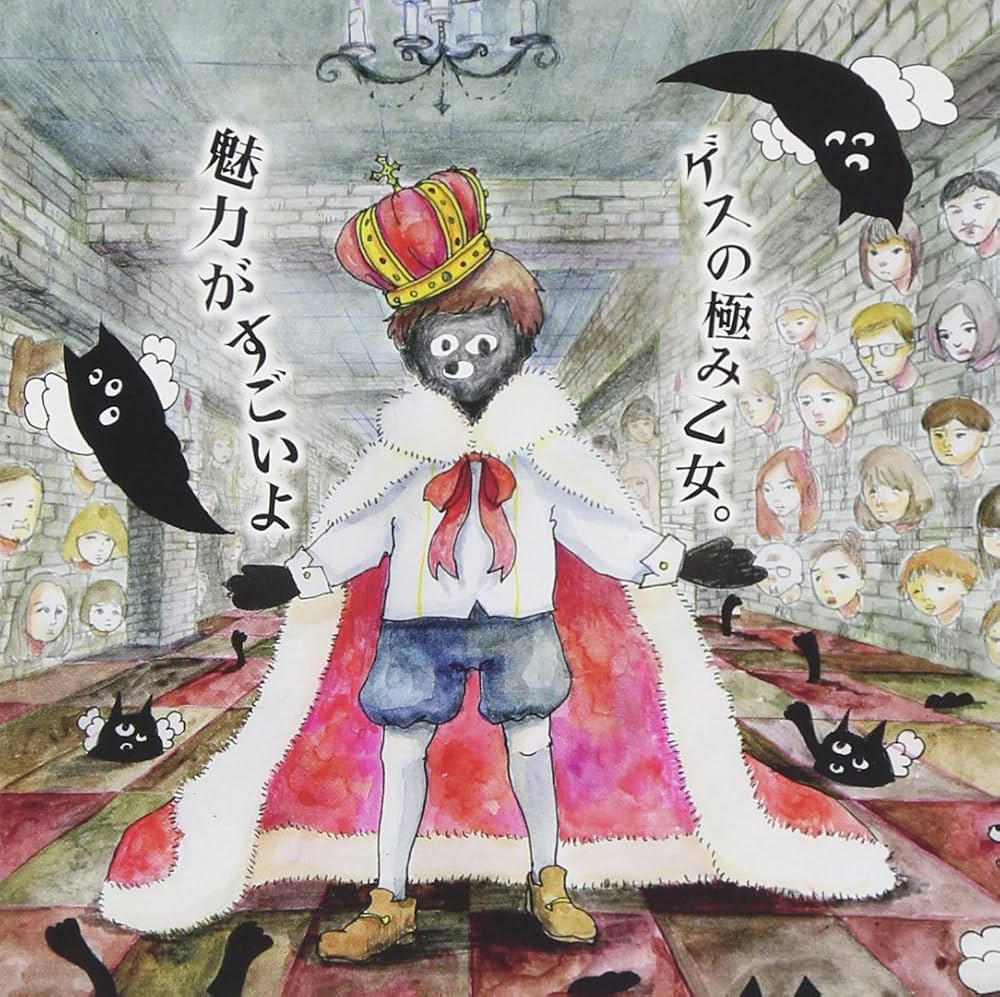
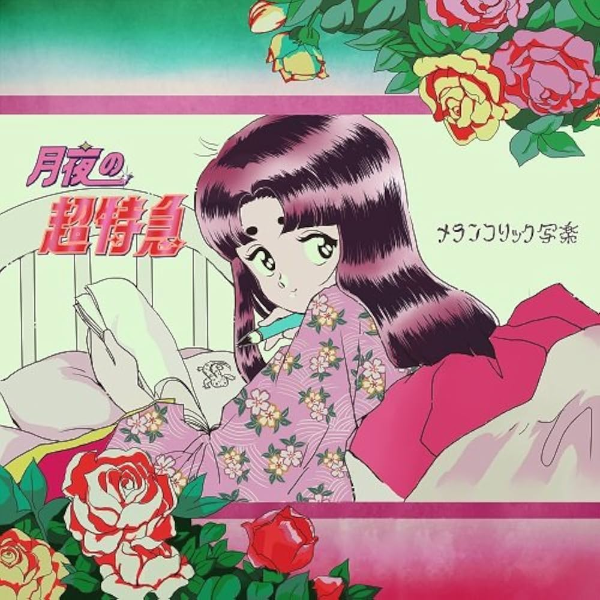
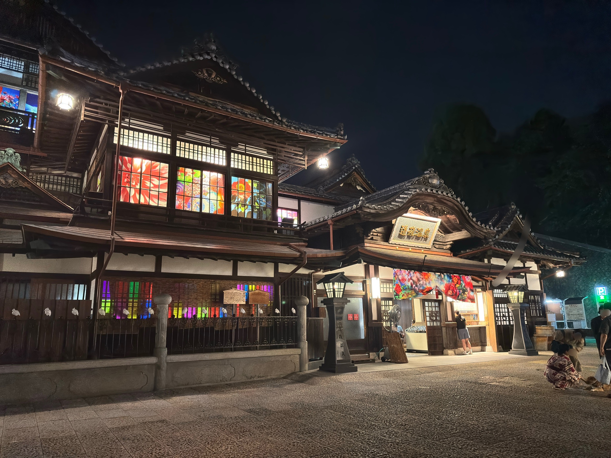

interview
天使特区 yasumi & 覆水「のんびり歌を載せていこうかな と思っていた時、yasumiくんに声をかけてもらい 二つ返事でOKしました」

自己紹介をお願いします。
天使特区 というバンドで作詞曲、Gt.を務める masuyama yasumi(以下yasumi) と Vo. 覆水です。
音楽を始めたきっかけがあれば、教えてください。
yasumi
元々ソロ名義で活動をしていましたが、女性ボーカルに歌ってもらいたいと思う機会が増え、覆水さんをボーカルとして誘い天使特区を結成しました。覆水
大々的な音楽活動はせず のんびり歌を載せていこうかな と思っていた時、yasumiくんに声をかけてもらい 二つ返事でOKしました
直近のリリースについて教えて下さい。
1st Single 『君はきっと天使だった。/贖うように』を先日リリースしました。全てを宅録にて制作し、アートワークは覆水が担当しています。

▷ Listen人生を変えた1枚の音楽アルバムがあれば教えてください。
yasumi — ゲスの極み乙女「魅力がすごいよ」
JPOPばかり聴いていた小学生の自分にとっては衝撃的で、彼らの音楽に触れて以来バンドというものを意識して聴くようになりました。

覆水 — メランコリック写楽「月夜の超特急」
歌うことだけが好きだった学生の頃、先輩に薦められ バンドというものを意識するようになったアルバム。大学でコピーしたくてギターを猛練習したので強い思い入れがあります

旅をして、また行きたいと思えた場所について教えてください。
yasumi
スウェーデンのストックホルムです。乾いた空気と水場に囲まれた街並みが自分の肌に合いました。特にガムラスタン(旧市街)は異国情緒を感じて何度も巡りました。
覆水
愛媛県の道後です 生活が見える街が、美しいから

今後の目標があれば教えてください。
精力的にリリースを続け、半年後くらいにアルバムをリリースしたいです。
天使特区